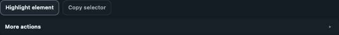

Context
Page URL and title if shareable, user flow, state reached, expected result, and actual result.
Private beta builds are intended for controlled testing. They are not public production sign-off.

Get the beta package: download the latest ZIP asset from GitHub Releases. If no release asset is currently published, request beta access by opening a public issue with label beta-access in GitHub Issues.
chrome://extensions.Use this matrix to decide whether a scan result is ready for engineering action or still needs review evidence.
| Output type | Ready for direct defect filing | Required evidence | Extra validation needed |
|---|---|---|---|
| Confirmed Confirmed issue | Yes, when reproducible in current state | Issue card details + selector + screenshot | Retest after fix |
| Review Manual/review item | No, validate first | Context notes + why judgment is needed | Manual UX and accessibility review |
| Advisory Advisory note | No, treat as quality signal | Guidance relevance to your standards | Policy/team decision |
| Limitation Limitation output | No, this is coverage risk | Limitation text + diagnostics export | Manual testing in missing contexts |
Page URL and title if shareable, user flow, state reached, expected result, and actual result.
Whether the issue was confirmed, review-only, advisory, or a documented limitation.
Diagnostics export, screenshots, exported evidence bundle, and browser or extension version where available.
Maintainer and support: Maintained by Carla Gonçalves. Support and beta feedback: GitHub Issues.
Current beta identity: A11Y Cat Extension Beta · Version v1.0.0-beta · Build 4b05134 · Docs updated 2026-05-01.
Report beta bugs through the public repository issue tracker.
Title:
Page or flow:
Extension version:
Chrome version:
Operating system:
Environment:
Expected result:
Actual result:
Evidence attached:
Confirmed / review / advisory / limitation:
Permission to share page URL/title publicly: yes/no